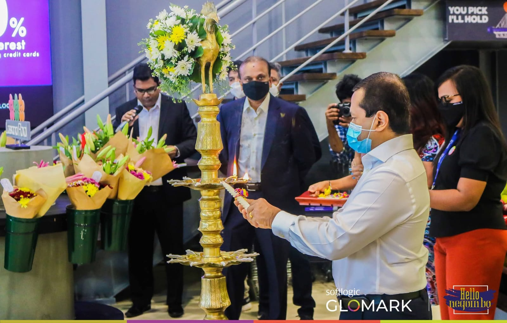
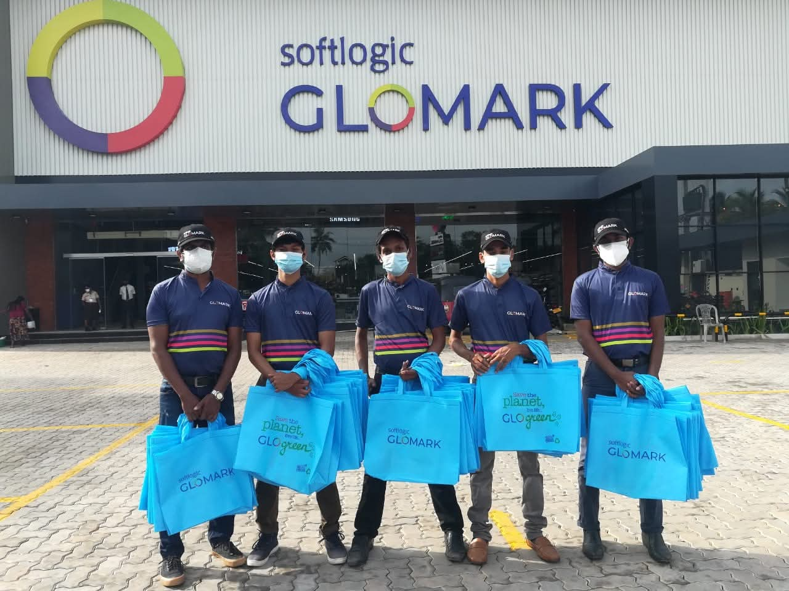
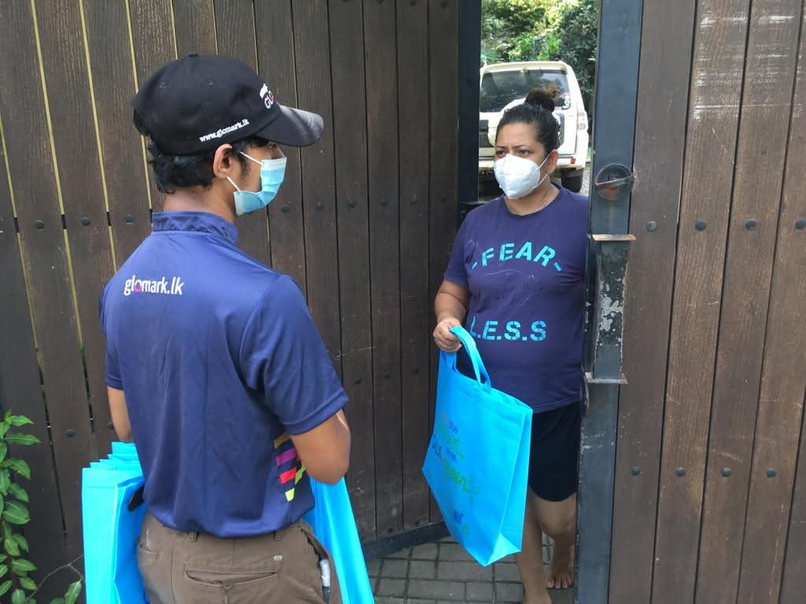
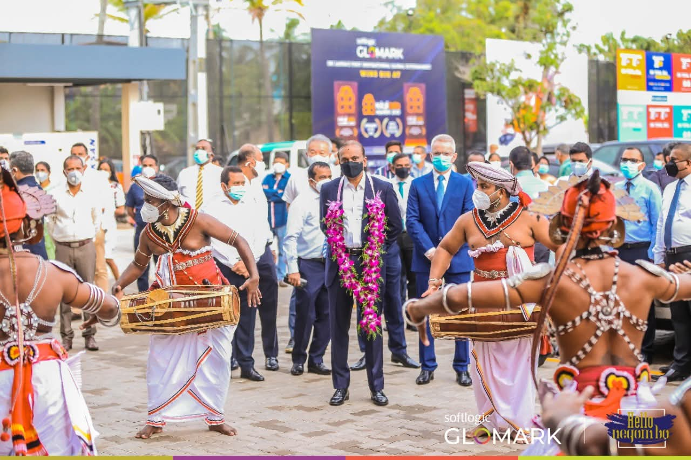

RNC Media Solutions partnered with Softlogic GLOMARK to promote the launch of their premium Glooutlet branches.
Softlogic GLOMARK is Sri Lanka's first premium supermarket chain offering a global retail experience, combining local essentials with international brands. For the Glooutlet launch, we supported new branch openings through a coordinated promotion strategy designed to attract customers and elevate the opening experience.
We promoted the new branch openings through targeted social media campaigns and door-to-door activations. Our team produced compelling launch content, managed campaign rollout across digital channels, and delivered local outreach to drive awareness directly to nearby communities.
The opening ceremony was handled with full event management care. We coordinated the venue setup, guest flow, brand signage, stage programming, and launch communications so every moment felt polished and professional. Our team ensured the event ran smoothly from welcome to closing, delivering a memorable launch day for the brand.
Softlogic GLOMARK
Glooutlet Branch Openings
Social Media, Door-to-Door, Event Management